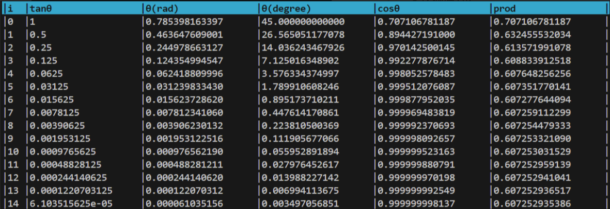

Cordic算法
首先复习一下线性代数中有关旋转矩阵知识

根据二维旋转矩阵的定义，二维数轴上点A$(x_0,y_0)$绕原点逆时针旋转$\theta$角度到点B$(x_1,y_1)$，相当于左乘一个旋转矩阵
(1)式可以提取一个$cos\theta$变换为
(2)所代表的旋转变换可以拆分为2步，结合下图
首先是从$A$点到$B'$点
然后是从$B'$到$B$点
根据(2.2)，易知点$B'$在射线$OB$上

由于从$A$到$B'$旋转的过程中半径变了，因此称之为伪旋转，只是完成了角度$\theta$的变换
而$B'$到$B$则是进行了半径的调整
简单起见，我们先来研究伪旋转(因为半径变化只是长度的线性变化，是比较简单的)
注意伪旋转的公式(2.1），还是含有$tan\theta$这样的非线性项，这对于硬件底层来讲（门电路）比较难计算
如果伪旋转角度$\theta$正好满足
那么此时就只需要进行移位操作，而不再需要计算$tan\theta$，极大降低了计算复杂度，(2.1)就可以变为下面这样
无需讨论$\theta = 0$的情况，因为此情况下未发生旋转
然而满足(3)式的只有特定的角度，可以编写代码如下

可见旋转只有满足上述角度（45°，26.565°...），才可以将$tan\theta$简化为移位操作
这就引出了Cordic算法的精髓：分解
$\sigma_i=\pm1$,为旋转方向，具体数值取决于如式（6）和（7）
(5)更直观的写法是 $$ \theta = \pm arctan(2^0) \pm arctan(2^{-1}) \pm arctan(2^{-2}) \pm arctan(2^{-3})...\\ \quad\\ 或\\ \quad\\ \theta = \pm 45^\circ \pm 26.565^\circ \pm 14.036^\circ \pm 7.125^\circ...\\ $$ $$ \begin{equation}\varepsilon_i = \theta - \Sigma_{k=0}^{i-1}\sigma_k\theta_k\end{equation} $$ $\varepsilon_i$是目标角度和已累加角度的误差(注意是迭代前误差) $$ \begin{equation} \sigma_i = \begin{cases} 1 & \text{if } \varepsilon_i \geq 0 \\ -1 & \text{otherwise} \end{cases} \end{equation} $$ 当迭代次数足够多时，可在一定误差允许下满足工程计算要求，逼近目标角度
示意图如下所示，将从A到B的旋转，分解为从A到C，从C到D.....，逐步减小且趋向于B的旋转

用线性变换公式表示就是
可以看出伪旋转和旋转的区别就是一系列cos项
从前面的表格product一栏中可以看出，随着i增加，$\theta$减小，cos趋近于1，因此该累乘式是有极限的，对于9次以上的迭代一般都取0.60725
因此式(8)可以变成
至此，已经可以大致知道从$A$绕原点旋转$\theta$到$B$点坐标的Cordic算法计算过程
严格证明过程
存疑主要来自于两处：
- 由于(5)式的项是递减的，是否会收敛导致无法逼近到一个较大目标角度？

- 迭代收敛处和目标值之间是否可能存在一个不随着迭代减小的误差？

对于第一个问题，只需要对（5）求极限
首先证明极限存在，
根据比较判别法，当$x>0$时，$arctan(x)<x$，因此
由于公比为1/2的几何级数收敛，故所证级数极限也存在
现在对级数$\Sigma_{i=0}^{+\infty} arctan(2^{-i})$进行求和
借助计算机，先求前21项的和$S_{20}\approx$1.743
然后对余项进行估计，
因此所求级数可以认为1.743弧度（约为99.88°），第四象限证明完全一致。因此(7)式的最大范围可以覆盖$[-\pi/2,\pi/2]$,对于二三象限的问题，也可以利用对称性转化。因此第一个问题得到解决。
对于第二个问题，将需要证明的命题转化为数学语言
$i=0$时，$\varepsilon_0=\theta\in[-\pi/2,\pi/2]$,因此$|\varepsilon_0|\leq\Sigma_{k=0}^{+\infty}\theta_k\approx1.743$
假设$i=m$时，$|\varepsilon_m|\leq\Sigma_{k=m}^{+\infty}\theta_k $
则当$i=m+1$时，需要求证$|\varepsilon_{m+1}|\leq\Sigma_{k=m+1}^{+\infty}\theta_k $
要证
即证明
其中，
分类讨论
$(i). \sigma_m = 1$
不等式右侧得证
根据(7)，由于$\sigma_m = 1$，此时$\varepsilon_{m} \geq0$
①这里需要证明一个前提结论
$i=0时，左边=0.7，右边1.743-0.7$，左边小于等于右边，成立
$i\geq1时，2^{-i} \in(0,\frac{1}{2}]，arctan有如下泰勒展开$
因此
所以
而根据泰勒展开
所以
①前提结论得证，不等式右侧亦得证
$(ii). \sigma_m = -1$
不等式左侧得证
根据前提结论①，$\theta_m\leq\Sigma_{k=m+1}^{+\infty}\theta_k\quad$
因为$\sigma_m = -1,则\varepsilon_{m}<0,所以$
不等式右侧得证
至此，关于Cordic的问题得到了证明